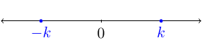
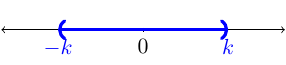
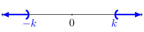
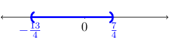
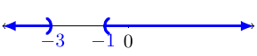

Section 1.8
Review
Remember that the absolute value doesn’t just change a negative number to a positive one. The absolute value of a number is the distance the number is away from zero. Another way to write the absolute value of a number is \(x=\sqrt{x^2}\).
Given, \(|x|=k\), the graph would look like:  and the set would \(\{-k,k\}\).
Given, \(|x|<k\), the graph would look like:  and the interval notation would be \((-k,k)\).
Given, \(|x|>k\), the graph would look like:  and the interval notation would be \((-\infty,-k)\cup(k,\infty)\).
Absolute Value Equations
Example 14
Solve \(|9-4x| = 7\)
Solution:
Remember \(|X|=k\) if and only if \(X=-k\) or \(X=k\). This means we will create two equations to solve:
Therefore, the solution set for the equation is \(\{\frac{1}{2},4\}\).
Remember, the absolute value expression must be isolated before splitting into two equations.
Example 15
Solve \(|2x+3|+1 = 5\)
Solution:
First, we need to isolate the absolute value expression:
Next, we split the equation into two equations. That is, we what to know when \(2x+3\) is equal to \(4\) and \(-4\).
Therefore, the solution set is \(\{\frac{1}{2},-\frac{7}{2}\}\).
Absolute Value Inequality
Remember the absolute value of some number, \(X\), is the distance \(X\) is away from zero. When it comes to inequalities we want to know the collection of numbers that satisfies the conditions.
\(|X|<k\)
Remember when we have \(|X|<k\) we want to find all \(X\) values such that the size of \(X\) is smaller than \(k\).
Example 16
Solve \(|4x+3|<10\)
Solution:
For this inequality, we want to know when \(4x+3>-10\) and \(4x+3<10\). It is important to understand why geometrically. Solving the two inequalities we have
We then graph this solution: 
The solution in interval notation would be \((-\frac{13}{4},\frac{7}{4})\).
\(|X|>k\)
Remember when we have \(|X|>k\) we want to find all \(X\) values such that the size of \(X\) is bigger than \(k\).
Example 17
Solve \(|5x+10|>5\)
Solution:
Here we want to find all the \(x\) such that the size of \(5x+10\) is larger than \(5\) units away from zero. That is, we want to solve these two inequalities: \(5x+10>5\) and \(5x+10<-5\).
The graph of the solution would be:
The solution in interval notation would be \((-\infty,-1)\cup(-3,\infty)\).